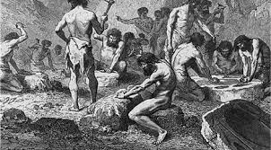

Sejarah Batu Akik
Indyo Pratomo, geolog dari Museum Geologi Bandung, mengatakan, sebagaimana mineral alam lainnya, pembentukan batu mulia terjadi melalui proses geologi sebagaimana batuan lainnya, misalnya melalui diferensiasi magma, metamorfosa, atau sedimentasi. Awalnya adalah aktivitas dapur magma di perut Bumi. Batuan cair bersuhu di atas 1.000 derajat celsius ini terus bergerak dalam selubung atau mantel Bumi. Di luar mantel ini adalah lapisan kerak Bumi, yang tersusun dari lempeng-lempeng yang terus bertumbukan dan menyisakan banyak retakan. Tekanan yang kuat dari dalam cenderung mendorong magma untuk mencari jalan keluar ke permukaan. Ketika cairan superpanas dan bertekanan tinggi ini mulai naik, cairan ini akan melarutkan berbagai batuan lain yang telah ada. Terjadilah proses pelarutan atau ubahan hidrotermal. Intan merupakan batuan yang terbentuk di lapisan luar mantel Bumi, di kedalaman hingga 161 kilometer. Di kedalaman ini, tekanan mencapai 4 gpa dan suhu hingga lebih dari 1.350 derajat celsius. Tekanan yang luar biasa kuat dan suhu yang luar biasa panas kemudian mengubah mineral karbon anorganik di kerak Bumi (beda dengan karbon organik yang membentuk batubara) yang dilewati hidrotermal ini menjadi kristal intan. Kebanyakan intan yang kita temukan sekarang merupakan hasil pembentukan proses jutaan-miliar tahun yang lalu. Erupsi magma yang sangat kuat membawa intan-intan tersebut ke permukaan, membentuk pipa kimberlite, penamaan kimberlite berasal dari penemuan pertama pipa tempat intan berada tersebut di daerah Kimberley,
Afrika Selatan. Intan merupakan bagian dari batuan mulia yang memiliki keistimewaan karena kekerasannya. Dalam jajaran batu mulia, skala kekerasan intan mencapai 10 mohs, disusul batuan safir dan rubi (mirah delima) yang mencapai 9 mohs, zamrud mencapai 7-8 mohs. Batuan akik atau yang dalam istilah gemstone digolongkan sebagai batuan setengah mulia memiliki kekerasan kurang dari 7 mohs. Berbeda dengan intan, batuan akik terbentuk saat larutan hidrotermal semakin mendingin karena semakin dekat permukaan. Sambil berjalan ke atas, dia mengisi rekahan dan pori-pori batuan, dan bahkan mengisi fosil kayu sehingga membatu. "Batuan akik terbentuk oleh tudung-tudung silika atau larutan hidrotermal, yang tidak terlalu jauh dari permukaan. Temperaturnya kira-kira 300 derajat celsius," kata Sujatmiko, geolog yang juga Sekretaris Jenderal Masyarakat Batu Mulia Indonesia.
